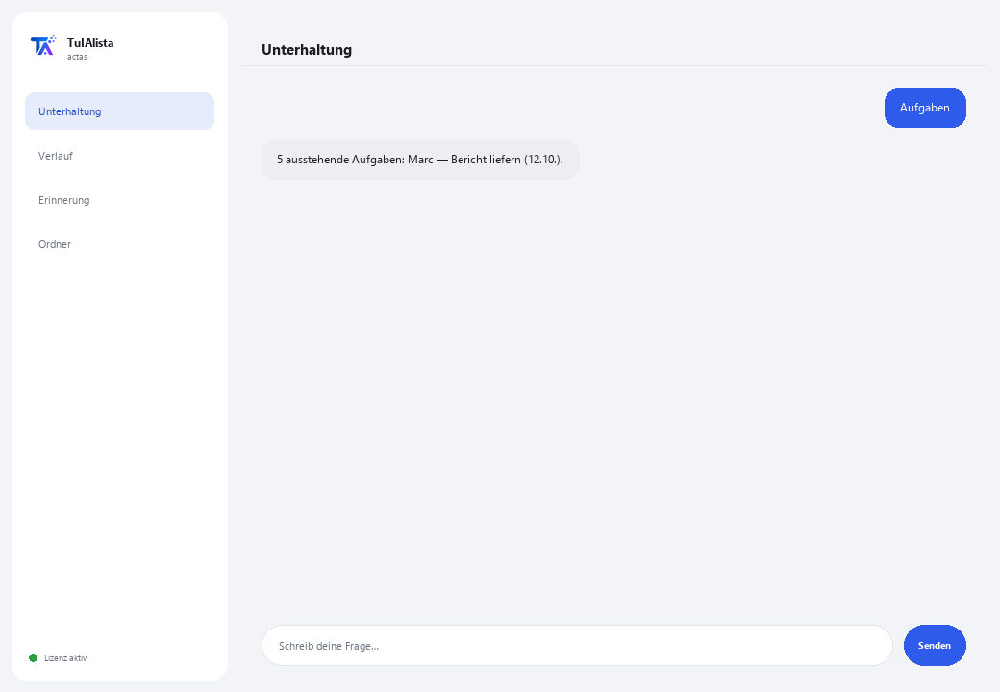

Agent für Protokolle und Besprechungen
Verwandelt Ihre Besprechungsnotizen in klare Protokolle und extrahiert automatisch Beschlüsse und Aufgaben.
Was löst er und was brauchen Sie?
In fast jeder Besprechung werden Dinge entschieden und Aufgaben verteilt, aber danach schreibt niemand ein geordnetes Protokoll, und die Beschlüsse gehen verloren. Dieser Agent liest Ihre Notizen oder Transkriptionen, erstellt das Protokoll, extrahiert Aufgaben mit Verantwortlichem und Termin und erkennt, welche Aufgaben aus vergangenen Besprechungen möglicherweise vergessen wurden.
- Sie brauchen: Ihren Lizenzschlüssel (TIA-XXXX-XXXX-XXXX-XXXX) und den Ordner mit Ihren Besprechungsnotizen. Kein Python, keine technischen Kenntnisse.
- Erstes Ergebnis in weniger als 5 Minuten: Sie installieren, aktivieren, wählen Ihren Ordner und führen Protokoll <Datei> aus, um Ihr erstes fertiges Protokoll zu erhalten.
- Ihre Notizen verlassen nie Ihren Computer — das Lesen läuft lokal.
soporte@tuialista.com oder besuche tuialista.com/soporte — wir antworten normalerweise am selben Werktag.1 Was dieser Agent tut
Sie zeigen ihm den Ordner mit Ihren Besprechungsnotizen oder Transkriptionen und er:
- Liest sie alle (Text, Markdown, Word und PDF), ohne dass Sie sie öffnen müssen.
- Erstellt ein strukturiertes Protokoll: Titel, Datum, Teilnehmer, Themen, Entscheidungen und Aufgaben.
- Extrahiert die Aufgaben und Verpflichtungen mit ihrem Verantwortlichen und ihrer Frist, wenn sie erscheinen.
- Trennt klar bereits getroffene Entscheidungen von zukünftigen Aufgaben.
- Konsolidiert die ausstehenden Aufgaben aller Besprechungen und erkennt die Nachverfolgung: vergangene Aufgaben, die noch offen sein könnten.
- Beantwortet Ihre Fragen zum Besprochenen: “was wurde zum Budget beschlossen?”
Ergebnis: Sie verlassen jede Besprechung mit einem fertigen Protokoll und einer klaren Aufgabenliste, ohne Zeit für das Schreiben aufzuwenden.
2 Installation (2 Minuten)
Für Windows. Keine dauerhafte Internetverbindung nötig, nichts wird in die Cloud hochgeladen.
Laden Sie das Installationsprogramm von tuialista.com/descargar herunter (Protokoll-Agent) und öffnen Sie es. Es erstellt eine Verknüpfung mit dem Logo auf Ihrem Desktop — kein Python oder Terminal erforderlich.
Doppelklicken Sie auf das neue Symbol. Fügen Sie Ihren Lizenzschlüssel ein (er wurde Ihnen beim Kauf per E-Mail zugesandt) und klicken Sie auf Aktivieren. Sie sehen ein grünes Häkchen, wenn er gültig ist.
Wählen Sie den Ordner mit Ihren Besprechungsnotizen aus und klicken Sie auf Agent jetzt verwenden. Beim nächsten Mal startet er direkt — er merkt sich Ihren Schlüssel und Ihren Ordner.
3 So verwenden Sie ihn
Der Agent öffnet ein Chat-Fenster, wie eine Messaging-App — kein schwarzer Programmierer-Bildschirm. Sie schreiben Ihren Befehl oder Ihre Frage in das Textfeld unten, klicken auf Senden (oder Enter), und die Antwort erscheint als Nachricht, genau wie auf diesem echten Bild:

Die folgenden Befehle sind die Wörter, die Sie in dasselbe Textfeld eingeben können:
> Protokoll <Datei>Strukturiertes Protokoll dieser Besprechung: Titel, Datum, Teilnehmer, behandelte Themen, Entscheidungen, Aufgaben (mit Verantwortlichem und Frist) und nächste Schritte.
> AufgabenKonsolidiert die Aufgaben aller indizierten Besprechungen, sortiert nach Frist.
> Entscheidungen <Datei>Nur die konkreten Entscheidungen/Beschlüsse einer Besprechung, ohne die zukünftigen Aufgaben.
> NachverfolgungAufgaben aus vergangenen Besprechungen, die noch offen sein könnten (ohne Datum oder mit abgelaufenem Datum), damit nichts verloren geht.
> Zusammenfassung <Datei>Kurze Management-Zusammenfassung (max. ~150 Wörter) für Abwesende: was besprochen wurde, was entschieden wurde und die nächsten Maßnahmen.
> freie Frage?Schreiben Sie Ihre Frage und der Agent durchsucht die Besprechungshistorie, z. B.: was wurde zum Launch im Juli beschlossen?
> beendenBeendet die Sitzung (funktioniert auch mit exit).
4 Beispiele für häufige Anwendungen
Protokoll fertig am Ende der Besprechung
Sie speichern Ihre Rohnotizen und Protokoll besprechung-heute.txt — Sie erhalten das strukturierte Protokoll zum Teilen mit dem Team.
Aufgaben vor dem nächsten Meeting durchgehen
Aufgaben — Sie kommen mit der konsolidierten Liste von Verpflichtungen und Verantwortlichen.
Verloren gehende Aufgaben retten
Nachverfolgung — erkennt, was aus früheren Besprechungen übrig geblieben und noch offen ist.
Jemanden auf den neuesten Stand bringen, der fehlte
Zusammenfassung besprechung-strategie.docx
5 Häufig gestellte Fragen
Werden meine Notizen ins Internet hochgeladen?
Brauche ich Internet, um ihn zu verwenden?
Welche Formate akzeptiert er?
Wie erkennt er die Aufgaben und Verantwortlichen?
Woher kennt er das Datum der Besprechung?
In welcher Sprache antwortet er mir?
Liest er ein gescanntes PDF?
Kann ich den Besprechungsordner ändern?
Sind die Protokolle 100 % genau?
Speichert er einen Verlauf zwischen Sitzungen?
6 Problemlösung
Ein .docx oder .pdf wird nicht gelesen
Zeigt “0 indizierte Besprechungen”
Zeigt “Lizenz ungültig” oder fordert erneute Verbindung
“Keine KI-Anbieter konfiguriert”
Keine dieser Lösungen hat Ihr Problem behoben? Schreiben Sie uns direkt — wir schauen es uns gerne gemeinsam mit Ihnen an.
soporte@tuialista.com oder besuche tuialista.com/soporte — wir antworten normalerweise am selben Werktag.7 Datenschutz und Vertraulichkeit
Ihre Besprechungsnotizen verlassen nie Ihren Computer.
- Der Agent liest und indiziert die Dateien lokal, auf Ihrem eigenen Gerät. Er lädt sie auf keinen Server hoch.
- Die lokale Erkennung von Aufgaben, Terminen und Teilnehmern erfolgt auf Ihrem Gerät.
- Das Einzige, was über das Internet läuft, ist: (1) eine Überprüfung, dass Ihre Lizenz aktiv ist — die den Inhalt Ihrer Notizen nicht enthält —, und (2) beim Erstellen eines Protokolls, einer Zusammenfassung oder einer Frage wird ein Textausschnitt an die KI-Engine gesendet, um die Antwort zu verfassen.